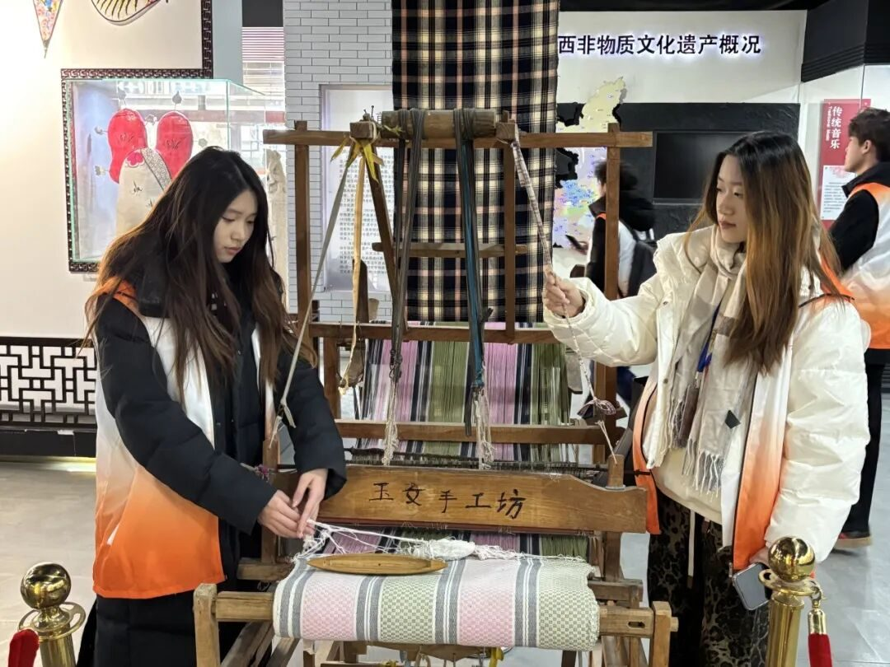
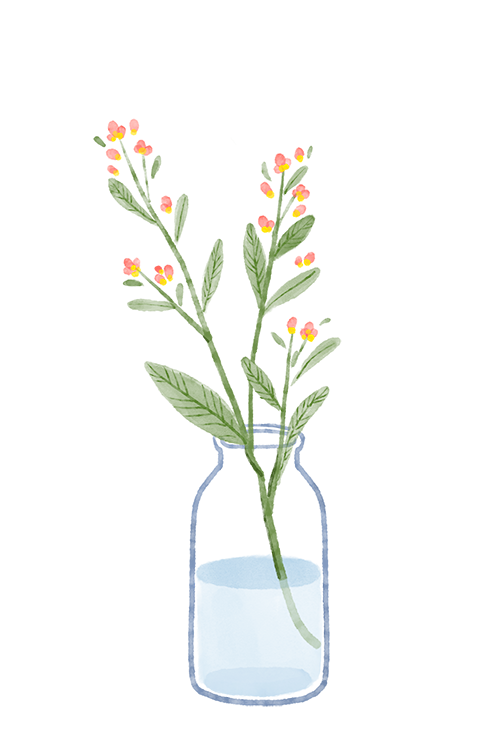
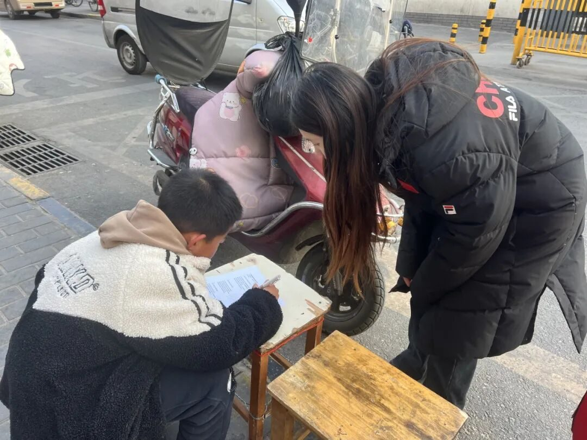
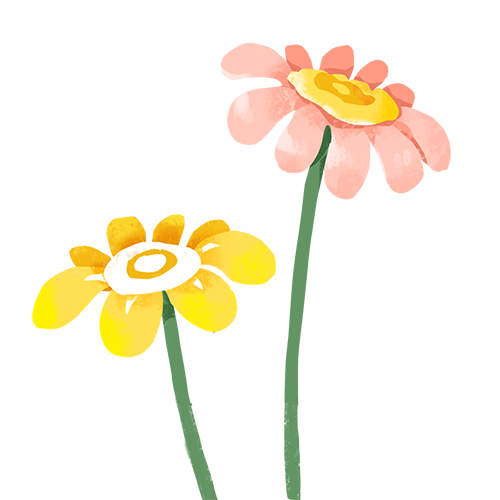
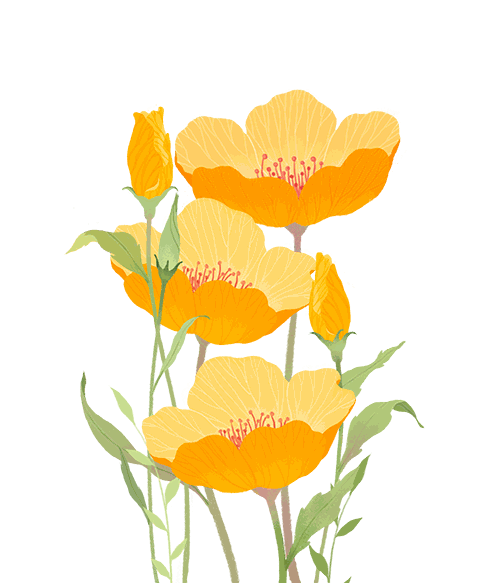
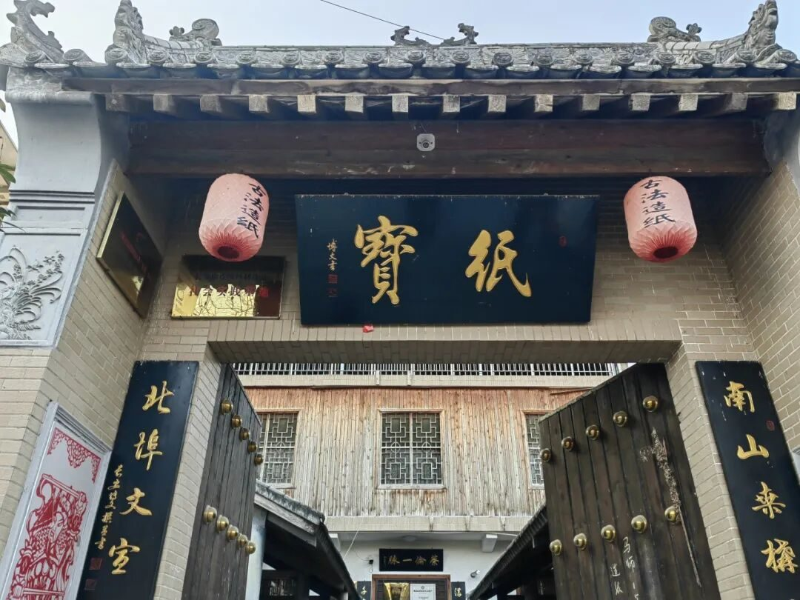
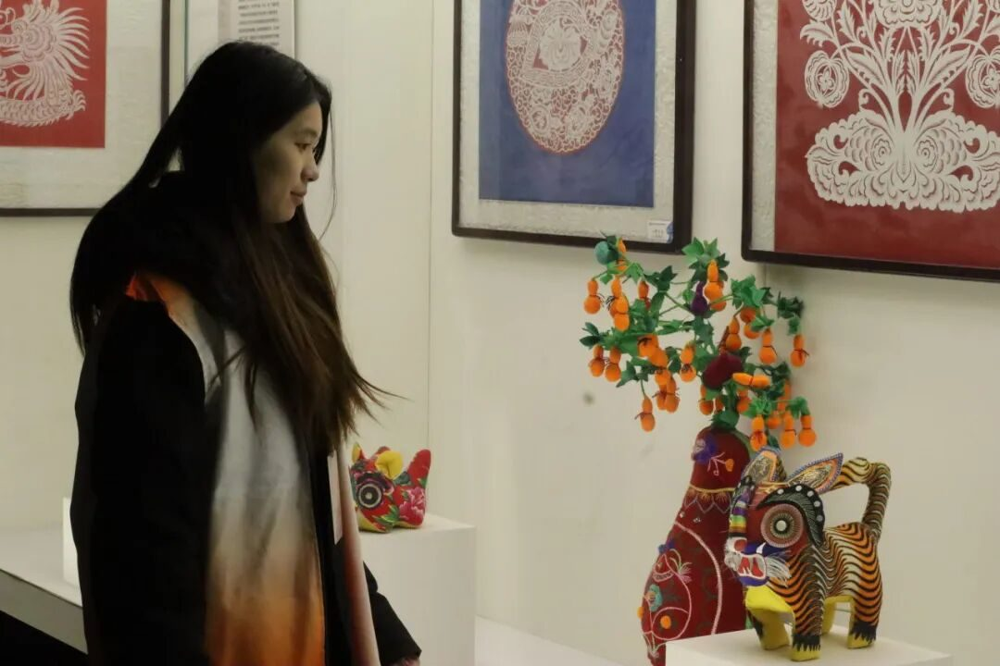

【行者无疆·秦育遗韵】个人实践感悟——尹继萱

岁
月
晨
光

在西安这座承载千年历史的古都，行者们开启了一场意义非凡的非遗探索之旅。这段经历，如同一幅绚丽多彩的文化长卷，在我心中徐徐展开，留下了难以磨灭的深刻印记。




碑林博物馆
踏入西安碑林博物馆，那一块块饱经岁月洗礼的石碑，仿佛在静静诉说着历史的沧桑变迁。古老的文字与精美的雕刻，让我领略到书法艺术与石刻技艺的独特魅力，也感受到古人对文化传承的执着坚守。
造纸体验
在木板拓印非遗体验馆，亲手触摸古老的木板，感受刻痕的凹凸，再将宣纸铺就，轻轻刷墨、敲打，一幅幅承载着历史记忆的拓片在手中诞生。这不仅是技艺的传承，更是对传统文化的致敬。
高家大院
在高家大院，皮影戏的光影交错间，演绎着古老的故事。艺人们手中的皮影灵动鲜活，伴随着悠扬的唱腔，将历史传奇与民间故事娓娓道来，让我沉醉于这独特的艺术形式中。
感受非遗文化
走访陕西省非物质文化遗产博物馆，丰富多样的展品琳琅满目，从传统手工艺到民俗文化，每一件都凝聚着先辈们的智慧与心血。何家营鼓乐社的演奏，那古朴典雅的旋律，仿佛穿越千年时光，将盛唐的繁华与古韵展现得淋漓尽致。易俗社的秦腔表演，激昂高亢的唱腔，尽显三秦大地的豪迈与热情。
街头采访
在大雁塔进行问卷发放和街头采访时，我深刻感受到民众对非遗的热爱与关注。他们的每一个回答，都饱含着对本土文化的自豪与传承的期望。

实践感悟
这次实践，让我明白非遗不仅是历史的见证，更是连接过去与未来的桥梁。它需要我们每一个人用心去守护、用行动去传承，让古老的非遗在新时代绽放出更加耀眼的光芒 。

来源 | 行者无疆实践团
图片 | 行者无疆实践团
文字 | 尹继萱
编辑 | 李麟凤
审核 | 李凌志 杩健辉
责编 | 邹靓靓